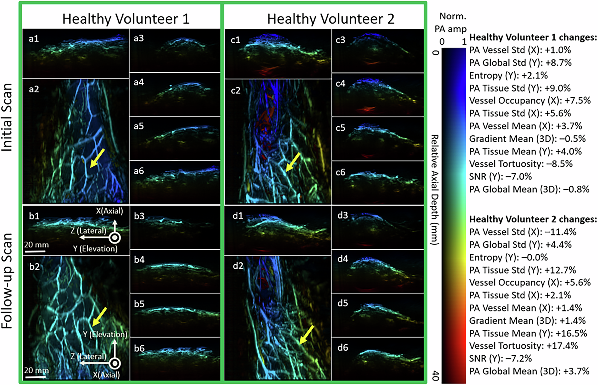

Sorted by date

Predictive modeling of chronic foot ulcer outcomes using longitudinal photoacoustic imaging
Yanda Cheng, Chuqin Huang, Shuliang Yu, Saptarshi Chakraborty, Yunqi Xi, Robert W. Bing, Huijuan Zhang, Xiaoyu Zhang, Isabel Komornicki, Linda M. Harris, Wenyao Xu, Jun Xia
npj Imaging, 2026

Dysphagia assessment based on photoacoustic imaging: a pilot ex vivo and in vivo study in infant swine models
Yanda Cheng, Chuqin Huang, Robert W. Bing, Emily Zheng, Huijuan Zhang, Wenyao Xu, Christopher Mayerl, Rebecca German, Catriona M. Steele, Jonathan Lovell, Lin Zhang, Jun Xia
Med-X, 2025